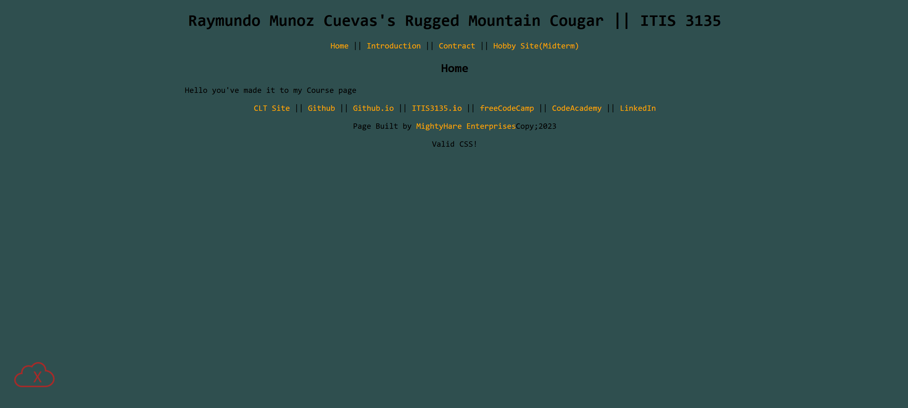

Munoz, Raymundo
Check out Raymundo's Website
- Files & Links:
- Index Page loads correctly and includes navigation.
- Could not find project from home page.
- Page Design:
- Home page looks ok, could be more sepeartion from footer/header
- Color palette is hard to read
- Could not find project files from home page.
- Page Elements:
- Could not find project files from home page.
- Assignment Requirements:
- Client project could not be found from home page, and therefore could not be reviewed
- Additional Notes:
- Website is off to a good start but could probably use a better color scheme
- The website also needs to link directly to your client project, it isn't clear where it's linked. Or it isn't there.